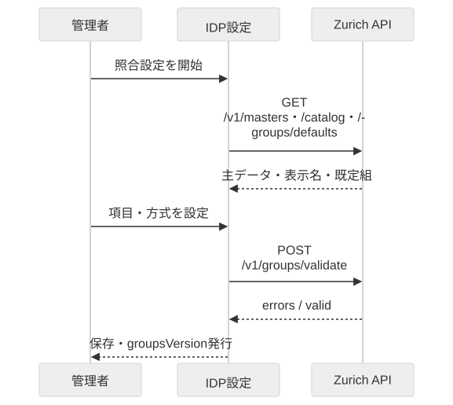
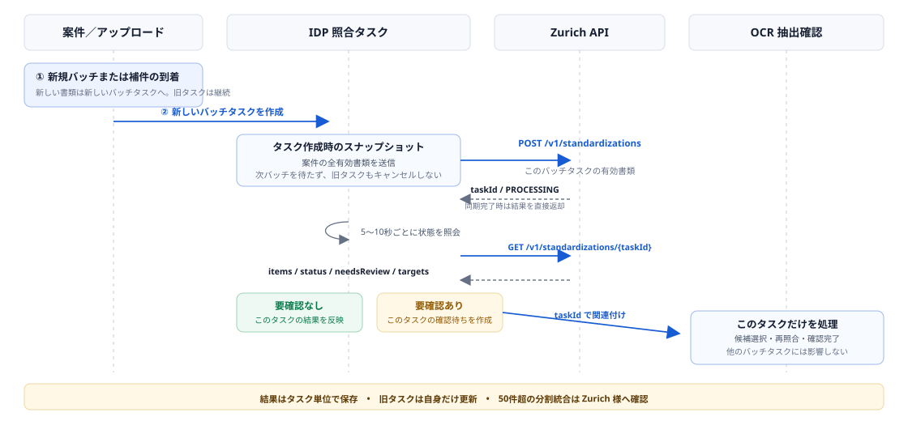

V1.1 でリクエストの待ち行列、同一優先度の受付順、50件超の分割時の関連付けが明確になりました。IDP はこれを前提に、新規書類または補件は独立タスクとして作成し、それぞれ OCR 抽出確認へ進めます。1つの業務バッチが複数の API タスクになる場合は、IDP が結果を統合して表示します。
| 実運用 | 仕様書の根拠 | IDP の確定方式 |
|---|---|---|
| 追加書類の到着 | 新規リクエストで案件の全有効書類を送信 | 新しい独立バッチタスクを作成 |
| 補件の到着 | 補件専用の項目はない | 新しい独立バッチタスクを作成 |
| 毎回の全書類再送 | 案件の全有効書類を送信すると記載 | 作成時点の全有効書類で処理し、そのバッチの結果を生成 |
| 複数バッチの実行順 | 同一優先度は受付順、並行数は API 側で制御 | Zurich のキューを利用し、案件専用キューは追加しない |
| 1回50件超の書類 | 同じ caseNo で分割し、clientRequestId の連番を変更 | 1業務バッチを複数 API タスクとし、IDP が結果を統合表示 |
新規書類または補件は独立したバッチタスクを作成し、それぞれ OCR 抽出確認へ進めます。50件超の場合は1つの業務バッチを複数の Zurich タスクに分け、IDP が taskId を保存して結果を統合します。

IDP の理解主データ取得、既定グループ、設定検証、保存、バージョン発行までの流れです。

IDP の確定方式新規バッチと補件はそれぞれ新しいタスクを作成し、旧タスクは継続します。各タスクは作成時点の全有効帳票を送信し、独立して OCR 抽出確認へ進みます。
| 方式 | 照合に使用 | 項目を更新 | 例 |
|---|---|---|---|
照合のみINPUT | はい | いいえ | 金融機関名カナ。候補を選んでも OCR 値を保持 |
照合して反映INPUT_OUTPUT | はい | はい | 金融機関名・支店名。候補選択後に主データ値へ更新 |
反映のみOUTPUT | いいえ | はい | 金融機関コード・支店コード。候補選択後に結果だけを反映 |
| 範囲 | 内容 | 状態 |
|---|---|---|
| S-01〜S-05 | 照合グループの CRUD、主データ同期、項目種別、複数グループでの入力共有、保存前検証 | 今回実施 |
| S-06 | groupsVersion、変更履歴、バージョン復元、検証環境への反映 | 今回実施 |
| S-07 | Zurich 既定グループの取り込み | 今回実施 |
| Q-01 / Q-03〜Q-06 | 案件の全書類送信、冪等キー、再試行、ポーリング、タスク結果のページング | 今回実施 |
| Q-07 | options.fallback の切替設定。既定は有効とし、業務シーンごとにフォールバックを無効化可能 | 今回実施 |
| A-01〜A-08 | 自動反映、確認待ちへの振り分け、失敗・キャンセル・競合・fallback | 今回実施 |
| C-01〜C-02 | 確認画面、候補選択 | 今回実施 |
| C-03 | 認識値修正後の再照合（items/standardize）。単一項目、複数項目の同時再照合、同時実行制御を含む | 今回実施 |
| E-02 | 反映値と selection をデータマッピングおよび後続出力へ渡す | 今回実施 |
| 50件超 | 同じ案件でリクエストを分割し、IDP が複数 taskId の結果を関連付けて統合 | 今回実施 |
| G / N | 共通実装、表示名、HTTPS、API Key、タイムアウト再試行、個人情報除去 | 今回実施 |
| バッチタスク | バッチ単位で独立タスクを作成、補件は新規タスク、各タスクの結果を独立保存して OCR 抽出確認へ進める | 今回実施 |
| 範囲 | 内容 | 結論 |
|---|---|---|
| S-09 | AI による照合グループ設定の提案 | 第2期 |
| S-08 | 廃止列・廃止ヒントの表示制御。新規設定では選択不可、既存設定は継続利用 | 第2期 |
| C-04 | masters/search による主データ検索 | 第2期 |
| E-01 | selection を SFDC などの後続システムへ実登録 | 第2期 |
| E-03 | feedback による確定結果の返却 | 第2期 |
| 完了通知 callback | 第2期に callbackUrl の完了通知を接続する。今回はポーリングで結果を取得する | 第2期 |